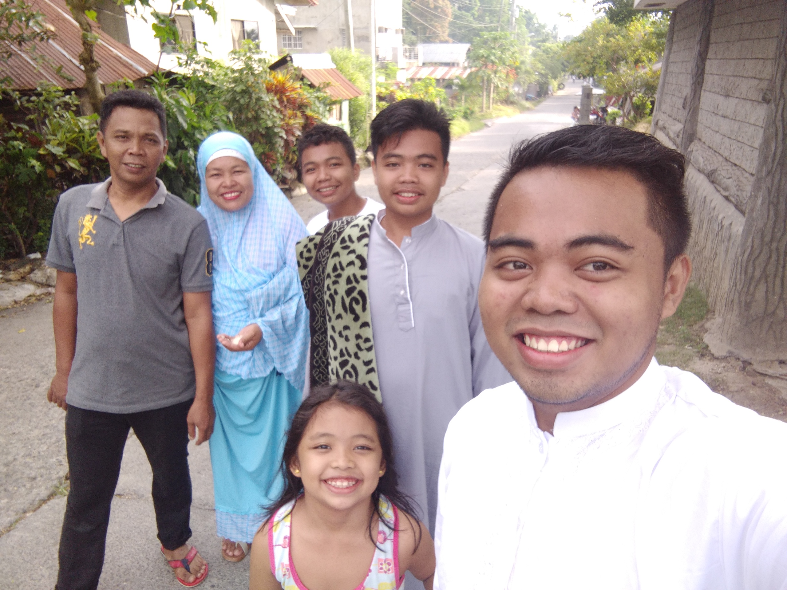

MY FAMILY IS MY INSPIRATION IN EVERYTHING BECAUSE EVEN WE HAVE A PROBLEM OR NOT THEY ARE HERE FOR GIVING US A REASON HOW TO BE STRONG AND HOW TO FACE A DIFFICULTIES WITHOUT GIVING UP
MY MOTHER IS MAIDA B. ELY.SHE IS A HOUSEWIFE.MY MOTHER IS THE REASON WHY WE GROW GOOD AND STRONG HUMAN BEING,BECAUSE WITHOUT MY MOTHERS CARE MAYBE ME AND MY BROTHER ARE ONE OF A TROUBLEMAKER IN EVERYWHERE
MY FATHER IS BAKAK A. ELY. HE IS A POLICEMAN.FOR ME IS HE IS OUR SUPERHERO BECAUSE EVERYTIME I DO ATROUBLE HE IS ALWAYS THEIR AND DEFEND ME TO OTHER PERSON.
I HAVE A 2 HANDSOME BROTHERS AND 1 BEAUTIFUL SISTER.THEY ARE MY FRIENDS INSIDE OUR HOUSE EVEN SOMETIMES WE ARE FIGHTING,WE LOVE EACH OTHER BECAUSE FOR ME IF THE BROTHERS AND SISTERS ARE NOT FIGHTING THEY ARE NOT CLOSE AND BORING SIBBLINGS.